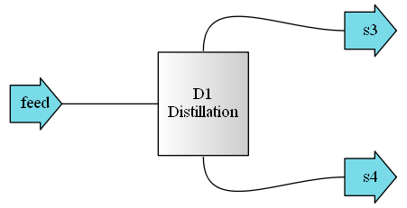

6.2. Distillation¶
6.2.1. Binary distillation assuming 100% separation on non-keys¶
In [1]:
from biosteam import Species, Stream
from biosteam.units import Distillation
# Set up stream
Stream.species = Species('Water', 'Methanol', 'Glycerol')
feed = Stream('feed', flow=(80, 100, 25))
feed.T = feed.bubble_T()[0] # Feed at bubble point T
# Set up column
D1 = Distillation('D1', ins=feed,
LHK=('Methanol', 'Water'),
y_top=0.99, x_bot=0.01, k=2)
D1.is_divided = True
D1.simulate()
# See all results
D1.diagram()
D1.show(T='degC', P='atm', fraction=True)

Distillation: D1
ins...
[0] feed
phase: 'l', T: 76.129 degC, P: 1 atm
flow: Water 0.39
Methanol 0.488
Glycerol 0.122
net 205 kmol/hr
outs...
[0] d1
phase: 'g', T: 64.91 degC, P: 1 atm
flow: Water 0.01
Methanol 0.99
net 100 kmol/hr
[1] d2
phase: 'l', T: 100.06 degC, P: 1 atm
flow: Water 0.754
Methanol 0.00761
Glycerol 0.239
net 105 kmol/hr
In [2]:
D1.results()
Out[2]:
| Distillation | Units | D1 | |
|---|---|---|---|
| Cooling water | Duty | kJ/hr | -4.87e+06 |
| Flow | kmol/hr | 3.33e+03 | |
| Cost | USD/hr | 1.62 | |
| Low pressure steam | Duty | kJ/hr | 9.04e+06 |
| Flow | kmol/hr | 232 | |
| Cost | USD/hr | 55.2 | |
| Design | Theoretical feed stage | 4 | |
| Theoretical stages | 13 | ||
| Minimum reflux | Ratio | 0.687 | |
| Reflux | Ratio | 1.37 | |
| Rectifier stages | 6 | ||
| Stripper stages | 27 | ||
| Rectifier height | ft | 21.4 | |
| Stripper height | ft | 52.4 | |
| Rectifier diameter | ft | 7.84 | |
| Stripper diameter | ft | 3 | |
| Rectifier wall thickness | in | 0.312 | |
| Stripper wall thickness | in | 0.25 | |
| Rectifier weight | lb | 6.98e+03 | |
| Stripper weight | lb | 5.31e+03 | |
| Cost | Rectifier trays | USD | 1.38e+04 |
| Stripper trays | USD | 1.9e+04 | |
| Rectifier tower | USD | 8.78e+04 | |
| Stripper tower | USD | 8.49e+04 | |
| Condenser | USD | 3.34e+04 | |
| Boiler | USD | 2.6e+04 | |
| Purchase cost | USD | 2.65e+05 | |
| Utility cost | USD/hr | 56.9 |